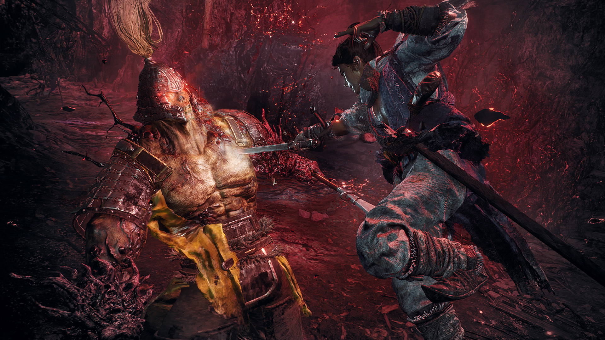
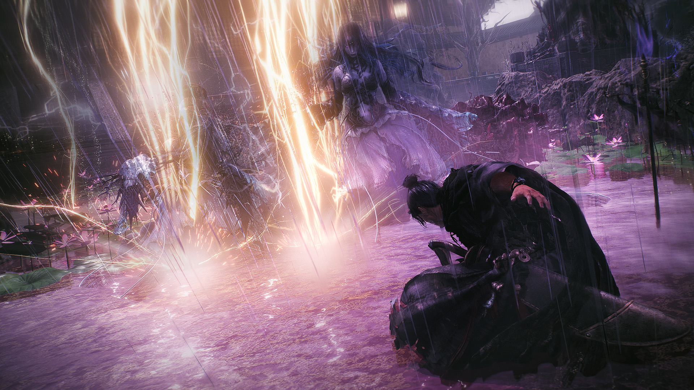
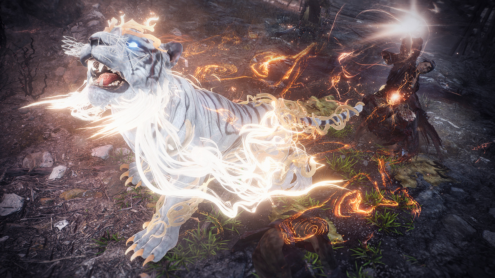
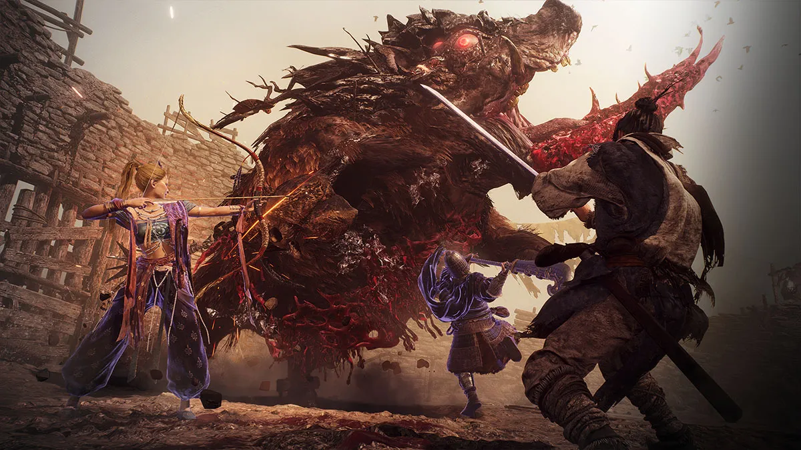

WO LONG
Battles based on Spirit strategies
By raising Spirit, the Qi stored can be used as energy to unleash powerful attacks of martial arts and Wizardy Spells. However, running out of Spirit will put the player at a disadvantage, so how and when it is used is key.
Various playstyles through weapons and Wizardry Spells

Weapons
Select your weapon of preference from among various types. These are examples of some of them.

Wizardry Spell
Secret spells that draw upon the power of the Five Phases, and can provide a way to breakthrough situations where weapons aren't effective. Raising your Morale Rank can enable the use of powerful Wizardry Spells.

Divine Beasts
Divine Beasts that are born from bonds with warriors, and summoning them unleashes great power.

Cooperate to Conquer
Online co-op will help players defeat the most formidable foes and toughest battlefields. By joining forces with friends, you will have the chance to takedown even the most fearsome monsters in the game!
Apart from these technical blemishes, Wo Long is an exceptionally accomplished evolution. It doesn't have the same variety as something like Elden Ring, but its focus on Wuxia-style martial arts puts it a cut above its peers. It's a game where challenges feel exciting rather than punishing because the learning curve is so exquisite and mastery feels sublime. Team Ninja has really managed to push the envelope, and lovers of Wuxia cinema and action RPGs had best not miss this one.
- PC Gamer
Buy it! It's time!
Available on multiple platforms!